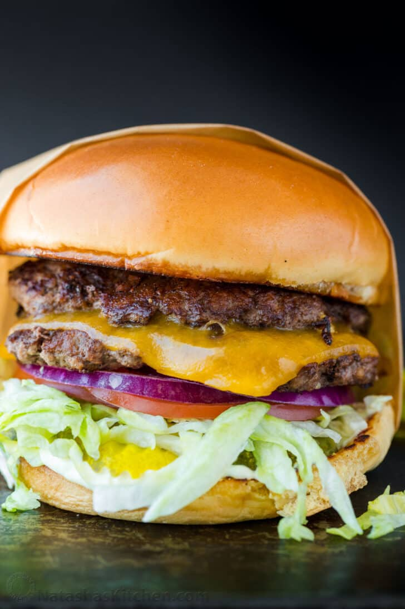

Smash Burger

Description
Smash burgers have the iconic flavor profile of classic Burgers, but that double burger patty with cheese melted in between is irresistible.
Ingredients:
- Ground Beef - 80g/patty
- Brioche Buns
- Cheese
- Optionals: Bacon, lettuce, pickles, tomatoes, red onion.
Steps:
- Prepare Patties - Divide 1 1/2 lbs of ground beef into 8 equal portions (3 oz each), cover, and refrigerate until ready to cook.
- Toast buns - lightly butter the cut side of your buns and toast on a griddle or skillet over medium heat until golden brown. Transfer to a rack.
- Cook patties - increase to medium-high heat. Depending on your surface area, place 2 to 4 cold pieces of meat onto the hot surface. Working quickly, cover each piece with a sheet of parchment paper and smash each into a thin patty. Remove parchment paper, season with salt, pepper, and garlic powder, add a dab of sauce, and flip. Sear for 2 minutes on the first side and about a minute on the second side.
- Add cheese - place a slice of cheese onto half of the patties and top with a second patty and remove from heat. Serve warm over toasted buns.